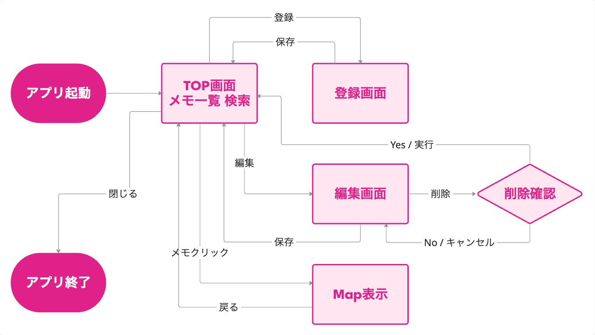
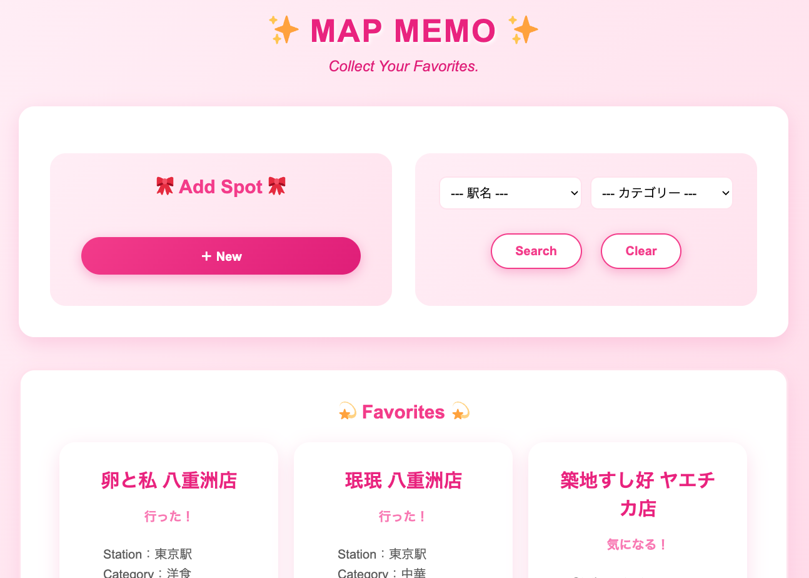
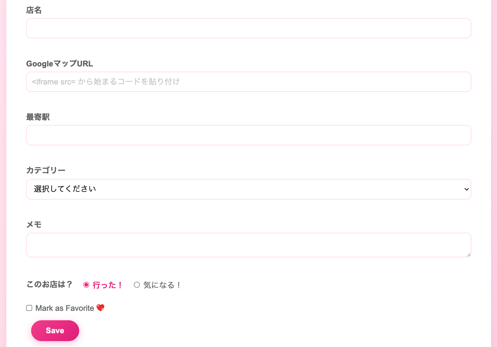
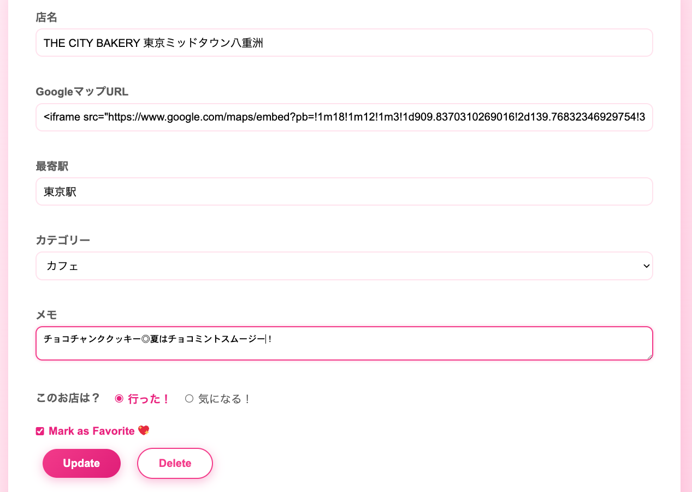
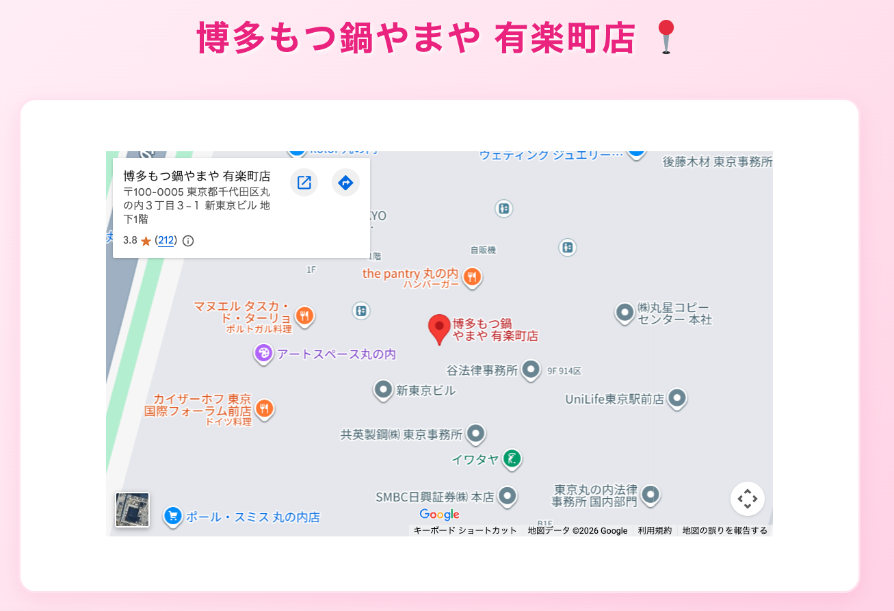

卒業制作発表
自分が行ったお店や行きたいお店を登録して、地図で確認できるメモアプリ
「今日なに食べる？」
美味しかったお店があったけど
すぐに思い出せない。
「この辺でいいお店ある？」
知っているお店はあるけど
すぐに提案できない。
「今度あの店へ行ってみよう」
気になったお店を
後で思い出せない。
行った店や行きたい店を登録し
一覧で管理できるような
自分だけのグルメマップメモ。
Googleマップを利用して
お店の場所を
すぐ確認できるようにする。
ランチや飲み会のときに
おすすめのお店を
すぐ提案できるようにする。
| 機能 | 内容 |
|---|---|
| お店情報の登録 | 店名・駅名・Googleマップ埋め込みコードなどを登録 |
| 一覧表示 | 登録した店舗をカード形式で一覧表示 |
| 検索機能 | 駅名やカテゴリーで絞り込み |
| 情報の更新・削除 | 登録済みの情報を編集・削除 |
| レイヤー | 使用技術 |
|---|---|
| クライアント | Webブラウザ |
| Webサーバ | Tomcat |
| サーバサイド | Java / Servlet |
| 画面技術 | JSP / CSS / JavaScript |
| データベース | MySQL |
| 開発環境 | Eclipse |
| カラム名 | データ型 | 内容（★ = 必須項目） |
|---|---|---|
| id | INT | idで自動採番 / PRIMARY KEY, AUTO_INCREMENT |
| name | VARCHAR(100) | ★ 店名 / NOT NULL |
| map_url | TEXT | ★ Google Map 埋め込みコード / NOT NULL |
| station | VARCHAR(50) | ★ 最寄り駅 / NOT NULL |
| category | VARCHAR(50) | ★ お店のカテゴリー / NOT NULL |
| memo | VARCHAR(100) | メモ |
| visit | BOOLEAN | 訪問済みフラグ |
| good | BOOLEAN | お気に入りフラグ |
| created_at | DATETIME | 登録日 / CURRENT_TIMESTAMP |
| updated_at | DATETIME | 更新日 / CURRENT_TIMESTAMP |
Controller Servletで制御View JSP + JSTLで画面表示Model DAO/DTOでデータ管理DBConnection で共通化DTO 店舗情報の受け渡す Restaurant クラスDAO DBのCRUD処理をまとめた DAO クラスと DBConnection クラスに分離try-with-resources により例外発生時も自動でリソースを安全に閉じる

ListServlet でDBからデータを取得findByCondition で絞り込み<c:forEach> で店舗を表示<c:if> で「お気に入り(💖)」等を表示

二重送信防止findByIdForEdit で編集対象を取得

Servlet・DTO・DAO を分け、
画面処理とデータ処理を
分離した構成に。
登録・更新処理の後は
sendRedirect で、
ブラウザの再読み込みによる
二重送信を防止。
escapeXml で、
HTMLの特殊文字を
エスケープして表示。
確認ダイアログを
JavaScript で実装。
Twemojiを利用して、絵文字を画像表示に。
今後の展望：多様なジャンルへの応用